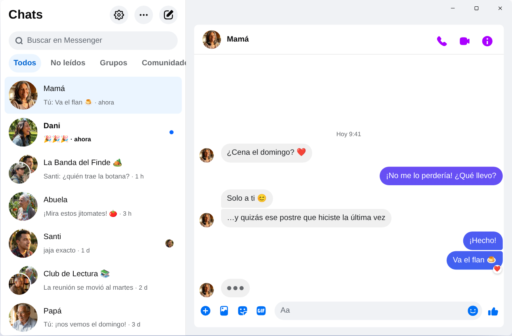

Chatpane / Windows
Actualizado en noviembre de 2026
Cómo tener Messenger en tu PC en 2026
Meta cerró la app de Messenger para Windows el 15 de diciembre de 2025, y messenger.com ahora te manda a Facebook. Esto es lo que funciona hoy en una PC o laptop con Windows 10 u 11.
Gratis y de código abierto · Windows 10 y 11 · No es una app de Meta
Respuesta corta
Ya no hay una app oficial de Messenger para PC. Meta la quitó de Microsoft Store, y desde abril de 2026 Messenger en la computadora solo funciona en facebook.com/messages, dentro de Facebook.
Si quieres Messenger en su propia ventana, sin el feed ni los Reels, Chatpane es una app gratuita y de código abierto para Windows que abre tus chats y nada más. Es un proyecto independiente: no es de Meta.
Cuidado con los "Messenger para PC" de los sitios de descargas
Varios sitios de descargas siguen ofreciendo el instalador de Messenger 2250.1. Es la app que Meta cerró en diciembre de 2025: al abrirla, solo te manda a Facebook. No ganas nada instalándola.
Tampoco escribas tu contraseña de Facebook en un programa o una página que no sepas de dónde viene. Si alguien te ofrece "Messenger para PC" con inicio de sesión propio, desconfía.
¿Qué pasó con Messenger para Windows?
En 2024 Meta cambió la app de Windows por una versión web empaquetada. En octubre de 2025 anunció el cierre y la sacó de Microsoft Store, y el 15 de diciembre de 2025 dejó de funcionar. En abril de 2026 también cerró messenger.com. Los detalles y las fechas están en qué pasó con Messenger para PC.
Tus opciones
Formas de usar Messenger en Windows
Chatpane en Windows
Chatpane abre el mismo Messenger que ves en el navegador, así que tus chats, grupos, llamadas y fotos están ahí y se sincronizan con tu celular. Lo que quita es todo lo demás de Facebook.
- Solo Messenger. El feed, los Reels, Marketplace y la búsqueda de Facebook quedan ocultos.
- Notificaciones útiles. Responde, reacciona, marca como leído o silencia desde la notificación, sin abrir la ventana. Ideal si vendes por Marketplace y no quieres perder a un cliente.
- Barra de tareas y bandeja. El número de mensajes sin leer en el ícono, inicio con Windows y la opción de seguir abierto en la bandeja al cerrar la ventana.
- Privacidad. Oculta que estás escribiendo, oculta nombres y fotos cuando compartes pantalla, y bloquea las solicitudes de analítica de Facebook (activado por defecto).
- En tu idioma. Chatpane usa el idioma de tu computadora, así que sus menús y ajustes aparecen en español.

Cómo instalarlo
- Descarga el instalador para Windows. Si tu PC tiene procesador ARM, usa el instalador ARM64.
- Ábrelo. Los instaladores de Chatpane para Windows todavía no tienen firma digital, así que es posible que SmartScreen diga "Windows protegió su PC". Haz clic en "Más información" y luego en "Ejecutar de todas formas". Descarga Chatpane solo desde chatpane.app o GitHub.
- Inicia sesión con tu cuenta de Facebook de siempre. Tus chats aparecen al instante.
¿No quieres instalar nada? La versión portable (.zip) funciona sin instalador.
Preguntas frecuentes
Preguntas sobre Messenger en PC
¿Chatpane es gratis?
Sí. No tiene precio, suscripción ni anuncios. Es de código abierto con licencia MIT, y su código está publicado en GitHub para que cualquiera lo revise.
¿Es la app oficial de Messenger?
No. Chatpane es un proyecto independiente, sin relación con Meta. Muestra el Messenger real de facebook.com/messages en una ventana propia, así que tus mensajes siguen pasando por Messenger y aplican las condiciones de Meta.
¿Funciona si no tengo cuenta de Facebook?
No. Desde abril de 2026, Meta solo deja usar Messenger sin cuenta de Facebook en la app del celular. En la computadora, Chatpane y cualquier otra opción necesitan una cuenta que pueda entrar a facebook.com.
¿Funciona en Windows 10?
Sí, en Windows 10 y 11. Chatpane usa Microsoft Edge WebView2, que ya viene con Windows 11. En Windows 10, el instalador lo descarga si falta.
¿Puedo hacer videollamadas?
Sí. Es el Messenger completo, así que las llamadas y videollamadas se abren en su propia ventana, igual que en facebook.com.
Descarga Chatpane
Gratis y de código abierto. Se descarga en segundos - pesa solo unos 4 MB.
¿Mac Intel más antigua? Intel .dmg
La lista completa con sumas de verificación está en
GitHub
- o brew install --cask kristofferR/tap/chatpane